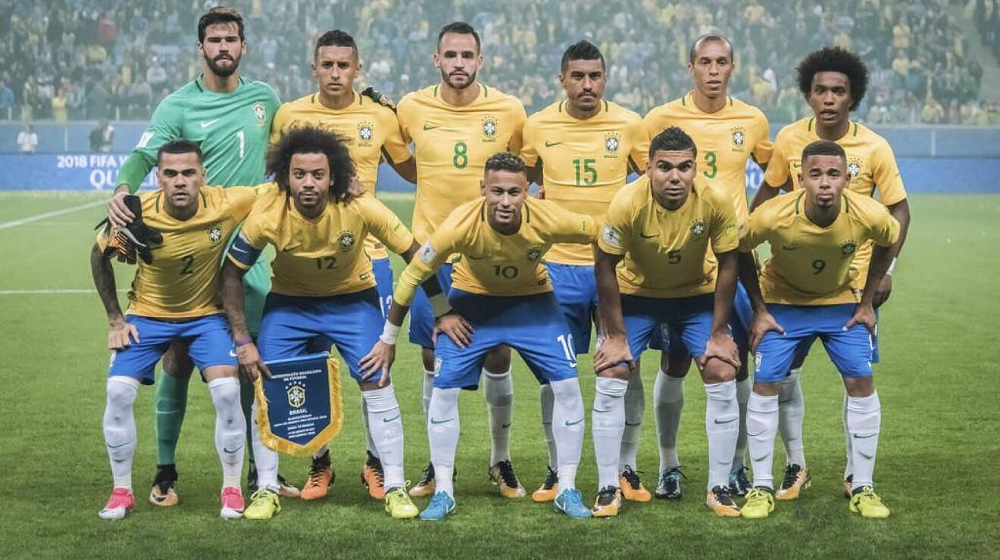

Ranking FIFA: 1° (agosto 2022). ¿Cómo se clasificó al Mundial? Ganó las Eliminatorias Sudamericanas. Rendimiento en 2021 (G-E-P): 12-3-1 (27 GF, 5 GC, +22). Rendimiento en 2022: 5-1-0 (19 GF, 2 GC, +17).
Alisson
Danilo
Marquinhos
Thiago Silva
Alex Sandro
Lucas Paquetá
Casemiro
Fred
Raphinha
Neymar
Vinicius Jr.
Nacionalidad: brasileño. Edad: 61 años. Contratado: 15 de junio de 2016. Récord en el cargo (G-E-P): 56-13-5. Títulos en el cargo: Copa América 2019. Victoria más notable: 2-0 sobre Argentina, semifinal de la Copa América 2019.
1930 Uruguay 6°
1934 Italia 14°
1938 Francia 3°
1950 Brasil 2°
1954 Suiza 5°
1958 Suecia Campeón
1962 Chile Campeón
1966 Inglaterra 11°
1970 México Campeón
1974 Alemania 4°
1978 Argentina 3°
1982 España 5°
1986 México 5°
1990 Italia 9°
1994 Estados Unidos Campeón
1998 Francia 2°
2002 Corea y Japón Campeón
2006 Alemania 5°
2010 Sudáfrica 6°
2014 Brasil 4°
2018 Rusia 6°
